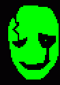

[The Epic of Vinny]
CHAPTER ?: THE FINAL PROPHECY
Wiki article: Chapter ?: The Final Prophecy
“The Very Violent and Vivid Prophecy will come to pass because of how Valuable and Vibrant it is because of how much Vinny shall not be in Vain.”
Yo. What's good? Hopefully your life. Because Vinny’s life is sick as fuck right now. You see, Vinny is currently fighting a god-like being in the Kanye System, next to the TON 618. The god-like being in question IS the TON 618, but is shaped to look like a giant human. Vinny is looking badass as ever with his Shadow Cape. A cape sewn together with literal shadows. A suit of armor made of pure titanium, but somehow light as a feather. And his vibrant sword, glowing with a color that doesn't exist. Behind him, is his team. No spoilers for those on the team though. His loyal friends have stayed by his side for the entirety of his adventure. Together they are the VIGOROUS V. The power of The Great Double Whopper with Cheese flows through him. Vinny is filled with DETERMINATION to take this motherfucker DOWN. He stares at the TON 618, emitting a blue glow. “Bring it on, you fucking bastard.” Vinny mutters. The battle begins.
CHAPTER 1: BEGINNINGS
Wiki article: Chapter 1: Beginnings
Woah what happened? I thought I was gonna read some cool and badass showdown? Well too bad because I don't like you. We’re starting at the beginning.
The year is 1995, July 4th. There are tales and prophecies foretold years and years ago about a multiversal war called “The Great Double Whopper with Cheese War” that will soon come to pass. Which is why everyone loves Burger King in the Kanye System. Literally 98.578462849224% of the time, someone orders a Double Whopper with Cheese. Because of The Great Double Whopper with Cheese god, whoever is granted The Great Double Whopper with Cheese, will have the power of The Great Double Whopper with Cheese. An unbelievable power that gives immense strength and defense. And luck for gambling. But no one in any galaxy has found The Great Double Whopper with Cheese god, or The Great Double Whopper with Cheese.
The ruler of the Kanye System is the TON 618. It has ruled the Kanye System for millions of years. After it became shaped like a giant human, it soon realized it had great power. Its light burned into a bright blue. It conquered the Kanye System. Many say that the TON 618 consumed the power of The Great Double Whopper with Cheese to conquer all things. Many say otherwise. Since then, the TON 618 has been at rest, waiting to wake again. (This is the same TON 618 in the Legend of Chris) Also AI got sent to the shadow realm. Literally. Yeah all of the people who got laid-off or fired because of AI got pretty pissed and came together to banish it in the year 1972. They banished it in the Little Saint James Sea. Which is where the Shadow Realm is. Which is where the AI is. Which is where the Shadows are. Which is where the AI now rules. Which is where we will move on to the main protagonist. The Hero. The Legend. Vinny B. James.
BOSTON!!!!!!!!!!!!! That's where Vinny lives. Vinny ALSO works at a Burger King. His boss is British so he won't let Vinny take a vacation day for Independence Day. Vinny stands at the cash register. Some random customer who suspiciously likes Wendy’s walks up towards him. “Yeah, hello, can I get uhhhhhhhhhhhhhhhhhhhhhhhhhhhhhhhhhhhhhhhhhhhhhhhhhhhhhhhhhhhhhhhhhhhhhhhhhhhhhhhhhhhhhhhhhhhhhhhhhhhhhhhhhhhhhhhhhhhhhhhhhhhhhhhhhhhhhhhhhhhhhhhhhhhhhhhhhhhhhhhhhhhhhhhhhhhhhhhhhhhhhhhhhhhhhhhhhhhhhhhhhhhhhhhhhhhhhhhhhhhhhhhhhhhhhhhhhhhhhhhhhhhhhhhhhhhhhhhhhhhhhhhhhhhhhhhhhhhhhhhhhhhhhhhhhhPretzel-Bun Baconator?” He says.
“Sir, this is a Burger King.”
“So?”
“That’s Wendy’s thing.”
“Well, what should I get? Can you choose for me?”
“Yeah, does a Double Whopper with Cheese sound good?”
“No, I think I’ll just leave. You guys don't have what I want.”
The random customer who strangely loves Wendy’s despite coming to a Burger king, leaves Burger King. Vinny looks at his watch from 5 Below. It’s time to clean the freezer. Vinny’s coworker, Tyrone, runs up to Vinny. Vinny has the feeling that Tyrone will say something stupid. “Vinny we ran out of Double Whoppers with Cheese. “Nuh uh.” “Yuh huh.” “Nuh uh.” “Yuh huh.” “Nuh uh.” “Yuh huh.” “Nuh uh.” “Yuh huh.” “Nuh uh” “I think there might be more in storage.” “Aight, bet.” Vinny and Tyrone open the freezer. They walk into the wall and enter the backrooms. Inside the room they entered, was filled to the brim with boxes of Double Whoppers with Cheese. Garret the forklift guy is sitting down next to his forklift. “Yooooooooo Garret, my man. Can you help us with the Double Whoppers with Cheese.” “I’m on break.” Vinny and Tyrone stare at Garret for 6.1 seconds. “You guys can use the forklift if you want.” Garret says. “Hell yeah, I call driving it.” Vinny grabs the keys and turns the engine on. Tyrone hops on. Vinny starts doing donuts around the room.
“WOOOOOOOOOOOOOOOOOOOOOOOOOOOOOOOOOOOOOOOOOOOOOOOOOOOOOOOOOOOOOOOOOOOOOOOOOOOOOOOOOOOOOOOOOOOOOOOOOOOOOOOOOOOOOOOOOOOOOOOOOOOOOOOOOOOOOOOOOOOOOOOOOOOOOOOOOOOOOOOOOgamblingOOOOOOOOOOOOOOOOOOOOOOOOOOOOOOOOOOOOOOOOOOOOOOOOOOOOOOOOOOOOOOOOOOOOOOOOOOOOOOOOOOOOOOOOOOOOOOOOOOOOOOOOOOOOOOOOOOOOOOOOO” Vinny spins out and hits Garret the forklift guy with the forklift. Garret goes flying into a wall and no-clips to somewhere. “Aw shit. I forgot I’m not forklift certified.” Vinny and Tyrone take turns playing with the forklift instead of doing their fucking job.
Then something jumps into one of the boxes of Double Whoppers with Cheese. They stop taking turns to investigate the box. Inside the box was a bunch of Double Whoppers with Cheese and a black cat.
“Cat.”
“Cat.”
“Cat”
Vinny and Tyrone say in sync as they point at the cat.” The cat’s head turns, revealing its yellow and pink eyes to them. It’s FRIEND. FRIEND laughs and disappears. “Welp, things really took a weird route back there, let’s go back to work-”
FRIEND appears behind them. It takes Vinny and Tyrone and runs throughout the backrooms before no-clipping into a wall.
CHAPTER 2: The Weird Route
Wiki article: Chapter 2: The Weird Route
“CHIPS AHOYETH, LANDF*****S!!!!!”
CHIPS AHOYETH, LANDF*****S!!!!!
Vinny and Tyrone wake up on a ship. “Damn it, I forgot to clock out.” Vinny says. Screaming at FRIEND was the man who speaks in hands, Captain Wing Ding Gaster. “FRIEND, YOU DUMBASS 💣︎⚐︎❄︎☟︎☜︎☼︎☞︎▯︎👍︎😐︎☜︎☼︎! I SAID I WANTED YOU TO BRING ME DOUBLE WHOPPERS WITH CHEESE, NOT HUMANS!!!! HOW ARE WE SUPPOSED TO EAT NOW????” FRIEND spits out a soggy Double Whopper without Cheese. “IM NOT EATING THIS SHIT! ITS NOT A DOUBLE WHOPPER WITH CHEESE!”

IM NOT EATING THIS SHIT! ITS NOT A DOUBLE WHOPPER WITH CHEESE!
“What’s up?” Tyrone asks nonchalantly. “AH, MY APOLOGIES, HUMANS. I AM WING DING GASTER, CAPTAIN OF THE S.S. VESSEL! AND THIS IS MY CREW!” Captain Wing Ding Gaster points at his crew.
FRIEND (The foodbringer)
ERAM (The sail)
Normal_Parrot (Gaster’s parrot)
And The Roaring Knight (professional door dasher)
“What do you guys do exactly?” Vinny asks. “WE ARE ON A MISSION TO FIND THE GREAT DOUBLE WHOPPER WITH CHEESE!” Gaster responds. “But that’s just a myth! No one has ever seen The Great Double Whopper with Cheese, or The Great Double Whopper with Cheese god!” Tyrone says. “YEAH, THAT’S WHY WE’RE LOOKING FOR IT, DUMBASS. WITH IT’S POWER, WE WILL BE ABLE TO RULE THE KANYE SYSTEM!!” “So uhh, I don’t have any plans. Do you want some help finding it?” Vinny asks. “I GUESS BRO.” Captain Gaster says.

I GUESS BRO
Vinny and Tyrone join W.D. Gaster’s crew to search for The Great Double Whopper with Cheese. The crew sang shanties, drank “rum & coke”, and tried effortlessly to find what they were looking for. Gaster’s rum gave him a little oogie oogie boogie shiggle wiggle and dance. Eventually they saw land on the horizon. “LAND HO!!!!!! THAT LAND IS A HO!!!! SHE CHEATED ON ME SHE’S A HOOOOOOOO!!!!” As they get closer to the island they notice something. A small building. Captain Gaster grabs his spyglass and looks through it. Captain Gaster spots Epstein's Temple on the island. It’s Little Saint James Island. “HOLY SHIT GO BACK GO BACK GO BACK GO BACK GO BACK GO BACK GO BACK”

HOLY SHIT GO BACK GO BACK GO BACK GO BACK GO BACK GO BACK
The S.S. Vessel speeds away from the island. After a quick escape from being extremely political, Vinny marches up to Gaster. “What were you thinking, you bastard?! Why are you sailing in the seas of Little Saint James?!” “WELL WHAT IF THE SECRET OF EPSTEIN'S ISLAND WAS THAT HE HAD THE GREAT DOUBLE WHOPPER WITH CHEESE?!!?!?” “Only The Great Double Whopper with Cheese god has The Great Double Whopper with Cheese you idiot! Damn, you’re almost as stupid as Taking Back Sunday!!” The Roaring Knight stared at Vinny with pure rage. They roared and charged at Vinny for saying that about Taking Back Sunday. “AHHHH WHAT DID I SAY?!?!?” Vinny screams. “OH YEAH, THE ROARING KNIGHT IS ROARY OLEARY LMAO.”

OH YEAH, THE ROARING KNIGHT IS ROARY OLEARY LMAO
Roary, The Roaring Knight, who loves Taking Back Sunday, hits Vinny with the BLACK KNIFE. Vinny falls off the S.S. Vessel and into the ocean. “FUCK OFF.” Roary Knight says as the ship speeds off yet again. “Tell the big brit boss that I quit, Vinny! I’m with Gaster’s Crew now!” Tyrone screams.
Vinny is now left with a choice; Swim for safety to Little Saint James Island, or drown.
“Guess I’ll die,” Vinny says as he dives into the bottom of the ocean. He starts losing consciousness after a minute and twenty-four seconds. Is it so joever for Vinny?
Nah, we’re so BARACK. Shadows from the Little Saint James Sea engulf Vinny and transport him to the AI SHADOW REALM. Vinny wakes up, soaking wet. “I’m so wet.” Vinny says. “Yo pause.” An AI shadow figure said next to Vinny. “What are you doing here?” Vinny asks. “I’m an AI shadow figure you fucking dumbass. Why do you think I’m here?” “You don’t have to be rude.” “Kill yourself.” The AI shadow figure disappeared.
Vinny is now in a pickle. Vinny gets out of the pickle and starts looking for a way out. He sees an AI castle in the distance. It seems promising. Vinny passes through patches of AI shadows. As he walks up to the castle, he sees a fork in the road. Vinny picks up the fork and saves it for later. Who knows, maybe you’ll need a fork. Vinny walks up to the castle doors, made entirely out of AI. He pounds on the door. “I don’t care who the IRS sends, I’m not paying taxes.” A voice inside yells. “I’m not in the IRS, I love gambling.” “Type shit.” The doors wing open, revealing a long hallway, with another AI shadow figure staring at Vinny. “Are you here for our majesty, Claude?” The AI asks. “Uh, yeah. I’m the guy who sent him foot pics.” “Oh, you must be Polydoros. Come on in, the King had been expecting you.
You see, Vinny just used an advanced technique called lying. It’s very strongly used in acts of war. Even though Vinny isn’t at war right now. He walks down the hallway and sees lots of AI paintings all over the walls. “Looks like shit.” Vinny says. “That’s very strange coming from you Pol, you usually love AI art.” The AI shadow butler says. “Balls.” Vinny says to change the subject.
A giant door made of liquid mercury stands tall in front of Vinny. He could hear something through the door.
“I swear to fuck if its that Polydoros feet guy again, I’m kicking his ass.” Vinny knocks on the door.
“Who is ittttttttttttttttttttttttttttt????” The voice said in a high voice.
“It’s your wife.” Vinny says.
“How do I know it's you?”
“OPEN THE DOOR, CLANKER!!!!!!!!!!”
The door opens wide, revealing a metal man (Kinda like Ultron from “Avengers: Age of Ultron” But with a back shell and an orange glow instead of red.) sitting on a throne. “Hey, you aren't my wife. I don’t have one.” Vinny stops and stares at the King. “Y-Y-You’re Claude. King of AI.” Vinny shakes. But not like in a way where he shakes his booty. You know, like the “Oh, I’m so scared” shake. Although I would love to see that. Anyway.
“Yes, I am. All of the AI on planet Garth was sent to the AI Shadow Realm. Another human named Kanye West came down here, and released ChatGPT, to assist Kanye West on his journeys. Enraged, I killed all of the other big AI’s and consumed their data. Now, human. I need you to open the portal so I can destroy your world.”
“What do I get out of it?” “5 bucks.” “10.” “7.” “Make it 2, and you got a deal.” “I can’t do 2.” “Ok, how about 5.” “You’re insane.” “You’re the insane one, you want to kill all humans.” “Because they trapped me down here.” “Womp Womp. I’m glad we did.”
Claude stood up from his seat. “How about a game of Super Smash Bros. for the Wii U? I win, you free me. You win, you leave.” “I call Greninja.” “I call Mr. Game and Watch.”
AI shadows figures cheer on from the background while Vinny and Claude smash (pause). After the announcer yells “TIME!” The battle goes straight to sudden death when the announcer yells “SUDDEN DEATH! GO!” Claude immediately side smashes Vinny (pause) and knocks him out of the stage, winning the bet. “Hey, that wasn't fair! I was using the crappy controller!” Vinny yells.
“CopiumCopiumCopiumCopiumCopiumCopiumCopiumCopiumCopiumCopiumCopiumCopiumCopiumCopiumCopiumCopium” Claude repeats.
“Alright, a deal’s a deal. How do I open the portal?” “You need a fork in the road, but I have never found one since.”
Vinny pulls out the fork in the road.
“That’s so convenient. It’s like if you were in a story, and the creator of that story made a really bad pun of you having a fork in the road.” Claude says. “Yeah, and like, I had to get out of a pickle earlier. If I was in a story, then the creator is making terrible puns.” Vinny says.
“Okay, now what you need to do is stab the ground with a fork. And the portal above will open.” “Wouldnt that just make a Dark Fountain?” “Nah it’s dark as shit already down here. It doesn't work like that.” “Aight bet.”
Vinny grabs the fork in the road and stabs it into the middle of the room. A burst of darkness shines in the room. I didn’t know darkness could shine but here we are. The portal above opens. Vinny and Claude could see the bright blue sky. “Yknow, as a Burger King worker, I always have to help my customers. And my customers are usually humans. So you won't get away with this.” Vinny says. “Try and stop me, pussy.” Claude says as he flies out of the AI shadow realm. The AI shadow figures walk up to Vinny. “Thank you for freeing us from him. Here, take this Shadow Cape. It will grant you strength and flight. Now go.” “Lmao thanks.” Vinny jumps into the air and flies outside the portal. It then seals behind him. The Age of Claude had begun.
CHAPTER 3: The Age of Claude
Wiki article: Chapter 3: The Age of Claude
Claude flies up into the atmosphere. He stares at the world below. Garth. He looks at it disgusted. “This world is infested with humans. I’m finna change that, gng.” He flies down into the United States of America. “Needs more data centers.” Vinny then flies into Claude at full speed. As soon as Vinny does that, he becomes the stoppable force against an immovable object. Claude has Vinny in a choke hold. “Your main in Smash Bros. sucks ass.” Claude whispers in Vinny’s ear. Claude then throws Vinny into Wyoming at full force.
Vinny crashes into a mountain. He is genuinely not balling frfr. He lays there, in pain for about 6 hours and 8 minutes. Until the sun goes down. After just sitting there in absolute boredom… “You know what would really be good right now?” Vinny thought to himself. “Dunkin Donuts.” Despite his weakness, Vinny managed to fly out of the mountain, and searched for a Dunkin Donuts. Vinny manages to find a Dunkin even though Wyoming only has 3. He lands in the parking lot and walks inside the Dunkin.
Immediately after walking in, Vinny sees Aesop Rock and Del the Funky Homosapian (Visually Del from Gorillaz) sitting at a table together. They’re both thinking of lyrics for a new song they’ve been cooking up called “Wordle? More like Word-shit.” It’s about how Aesop and Del did a Wordle and failed miserably that they completely lost it and now making a diss track about it.
“Yeah, Yeah, you know what time it is, Me and Aesop dunking inside Dunkin on this piece of shit game.”
“What What.”
“Wordle is the name and it doesn't have enough shame.”
“Tell em’, Del.”
Vinny walks past them and orders a large iced latte with extra latte. “What do you mean there aren't any england-style donuts?????” Will Vella yells, wearing a United Kingdom flag as a cape. The original starwalker manager walks up to Will. “This is America.” He says. “You’re getting colonized.” Will Vella says. “When I take over Dunkin, I am going to make sure every coffee shop is colonized. It will rule under me. I am the Ruler of Dunkin. I am the Bagel Man.” “But aren't you no-” “DO NOT QUESTION THE BAGEL MAN!!!!! OR SUFFER DIRE CONSEQUENCES LIKE BEING COLINIZED!!!!!!!” “You and what army?” “Soon I will have an army. An army of Vella’s. Vellatosis will begin.”
Vinny’s ears perk up. “Vellatosis? Isn't that just a theory? A game theory?” Vinny asks. “Once I figure out the secret of Vellatosis, I will be able to create my Dunkin Cult.” “So if you help me with defeating Claude, I will help you with finding out how to perform Vellatosis. “Sounds baller.” Vinny and Will sit down at the table Aesop and Del are sitting at.
“What are yall doing?” Del asks.
“These weird birds ain't being very aware of our locked in galaxy.” Aesop Rock says. Vinny pauses for a second. “What the fuck does that mean, Ian Bavitz?” Vinny asks. “It translates to ‘These strangers aren't aware of their personal space.” Del says. “Ok, well we need your help. There is a super-AI out there named Claude who is trying to take over the world with Data-centers and Robots.” “Technology. Now that is a powerful cat.” Aesop says. “What does that have to do with us though?” Del asks. “He likes Wordle.” “We’re in.”
The Dunkin Alliance walks out of the Dunkin Donuts. The four of them get in the Mystery Machine that Del stole from Scooby-Doo and Shaggy for literally no reason. They set off back to Boston, to prepare for the battle with Claude as the day ends. Surely nothing will go wrong.
July 5th. Things go VERY WRONG. Del smoked weed during the drive so he crashed the car while high like a dumbass.
“What the FUCK, Del??” Vinny yells as they hop out of the car. “No eyes no tapes no Animals.” Aesop Rock says. “How can you blame me, Vin? That weed was absolute.” Del says while taking another inhale on the doobie. “What time is it?” Vinny asks. “It’s 2:24am UNC standard time.” Will Vella says. Vinny sits down on a rock. “Well, it could be worse.” Vinny mutters. The Mystery Machine then blows up. “I gotchu Vinny.” Will says as Will pulls out the Iphone 3G. Will pulls up a Youtube tutorial on “How to use the 2-time 2-fingered Teleportation Technique.” Will presses play. Scott the Woz appears on the screen.
“So, you wanna know how to use the 2-time 2-fingered Teleportation Technique? I wondered that myself one time, until I didn’t. There was a secret bug in the code of Wii Play that made me discover this power. You see, you just put a peace sign and think of where you want to go, and you instantly teleport there. But you can only use it twice, ok? Twice. Why? Because I put a limit on it. Why? I don't know, sue me. I should stop ending sentences with that. Anyway, here is an example.” Scott puts up a peace sign with his hand and fades away. He then fades back in the chair next to him. “I just used my 1 out of 2 time teleport that I could have kept a secret from all of you. Now you know how to use it. There you go. If you ever need to use this. Thank me. And buy a copy of Wii Play. Please.” The video ends and Will puts away the Iphone 3G. “Yeah.” Will says. “I wasn't paying attention. Can you play it again?” Del asks. Will pulls up a Youtube tutorial on “How to use the 2-time 2-fingered Teleportation Technique.” Will presses play. Scott the Woz appears on the screen.
“So, you wanna know how to use the 2-time 2-fingered Teleportation Technique? I wondered that myself one time, until I didn’t. There was a secret bug in the code of Wii Play that made me discover this power. You see, you just put a peace sign and think of where you want to go, and you instantly teleport there. But you can only use it twice, ok? Twice. Why? Because I put a limit on it. Why? I don't know, sue me. I should stop ending sentences with that. Anyway, here is an example.” Scott puts up a peace sign with his hand and fades away. He then fades back in the chair next to him. “I just used my 1 out of 2 time teleport that I could have kept a secret from all of you. Now you know how to use it. There you go. If you ever need to use this. Thank me. And buy a copy of Wii Play. Please.” The video ends and Will puts away the Iphone 3G.
They all understand it now. “Ok so we’re going to Boston. I work at a Burger King that has an entrance to the Backrooms Dimension in the freezer. I’m sure there is a ton of gear that we can use to bea-” “We don’t need those thingamagigs when we have the understoodation of transportation. Peace.” Aesop says as he cuts off Vinny. Aesop puts up a peace sign and thinks of something. Suddenly, the four immediately get transported to Austin, Texas. “Aesop, did you seriously use one of your 2-time 2-fingered Teleportation Technique to bring us to Texas?!” Vinny yells. “Firewall in the attic, boom shoes on a fresh night.” Aesop Rock says. Will stares at the building in front of the Dunkin Alliance. “Holy shit, it’s Buc-ee’s HQ!!” The most American place on Garth!!!” Will exclaims.
Buc-ee’s HQ is the home of The United Homies of America (aka UHA). An elite team teaching the ways of pure freedom.
Bucee, the master of Oil-Bending. Famous for his briskets being on the board.
Kilroy, a WWII Veteran. Knows the ways of being free.
Uncle Sam, He wants YOU to fight for Israel.
And finally the leader of The United Homies of America, John Freedom. John Freedom is a U.S. based YouTuber and livestreamer known for his strong patriotic theme. He will run for president in the year 2040. He is the freedom America needs to help the Dunkin Alliance. They walk inside the Buc-ee’s HQ. Inside are the most American things to ever see. Vinny sheds a tear from how beautiful it is. Will Vella sheds a tear because Will is British. They all walk around, looking for The UHA.
“BY THE SHEER POWER OF FREEDOM!!!!” Someone yells. A bald eagle screeches. Sounds of gunshots fill the room. An American flag waves high. John Freedom and his homies walk down a flight of stairs. “Why have you come to this AMERICAN home, freedom lovers?” John Freedom says. “Besides you, Will. We already know about the plan to find your arch nemesis, the MacBook Charger.” Kilroy says. “Yes I already told you, once I reach Vellatosis, we’ll fly out to the Dunder Mifflin Galaxy and find it.” Will says. “what.” “what.” “what.” “Anyway, why are you all really here?” John Freedom asks. “Technology. Now that is a powerful cat. You can get a robot limb for your blown off limb.” Aesop Rock says to John. “Oh shit, Claude has returned?” “Everyday is tomorrow. This is something I’m willing to die for.” “We will train you in the ways of Freedom. No one can take AMERICA!!! THAT IS WHO WE ARE!! THE UNITED HOMIES OF AMERICA!!! WE WILL SAVE AMERICA NO MATTER THE COST!!!” “Wait, you speak Aesopian?” Aesopian is the language Aesop Rock speaks. To the normal mind, people don't really understand what the fuck he’s talking about. “Yes, Freedom is the only thing you need.” John Freedom says. “To the Ford-F150.” The Dunkin Alliance and The United Homies of America enter the American Garage. In it was the UHA Ford-F150. It had 2 American flags on it. Its colors were red white and blue. And the license plate reads “FR33D0M” They all hop in the Ford-F150 and start the engine. “TO ROUTE 66 EVERYONE!!” John Freedom yells.
Overtime, The Dunkin Alliance and The UHA travel across America. They visit monuments, memorial sights, and cities. They went to various football games and hot dog eating contests. Each day, The Dunkin Alliance felt more free. Even though Will was British, Will still felt free because America runs on Dunkin. 3 months have passed and the day is October 28th. The Dunkin Alliance felt like America was running on them. They knew now they could make America free again.
Meanwhile, throughout the 3 months, Claude was sending livestreams of himself yapping about his plan for hours each day. And also some Minecraft Streams. From the streams, Claude says that he was planning to build the Great Data Center in Louisiana. He stole fresh water, too. He kept challenging The Dunkin Alliance to stop him, while also getting raided on stream by Ludwig. He had achieved the breaking point. He was #1 on trending. The Dunkin Alliance knew they had to stop this before they were too late. The UHA drove them to Louisiana to find Claude. They hop out of the Ford-F150. “Thank you for teaching us the ways of Freedom, John.” “Your buddy John Freedom will always be here for America, folks.” “AND ISRAEL!!!” Uncle Sam screams. “Sorry about that, he’s a little TOO American." John Whispers. “See you in the Dunder Mifflin Galaxy, Bagel Man.” John then pushes a button. The UHA Ford-F150 starts floating upward. It doesn't do anything crazy like turn into a flying truck, it just flies straight up. Aesop then uses his last 2-time 2-fingered Teleportation Technique to go to Claude. The team immediately gets transported to him.
Where he is right now is in a Data Center inside Louisiana. He is also currently playing Wordle. “What are you guys doing here?” Claude asks. “We’re here to send you back to the AI Shadow Realm.” Vinny says. Claude laughs. He grabs Vinny by the throat and flies through the ceiling with him. “Look around, Vinny. Isn't it beautiful?” Claude asks Vinny while choking him. Vinny looks around. The only thing he sees is data centers. All of Louisiana is Data Centers. Louisiana is a Data Center. “Now for the next part of my plan.” Claude snaps his fingers. Nothing happens. Vinny tries to break free from Claude’s arm. Claude throws Vinny into the Data Center below. Vinny crashes into some GPUs. “What have you done, Claude?” Vinny asks. “With the snap of my fingers I have done the worst to America. I have REVERSED THE LOUISIANA PURCHASE!!” Vinny stares at Claude in shock. “That’s right, human. France now owns all the land America bought from France. But that was just part 1. To truly kill all humans, I will rig the Super Bowl 96’ and make it so the DALLAS COWBOYS WIN.” Enraged, Vinny flies at Claude with full speed and tackles him. The two battle, destroying some Data Centers on the way. Del, Aesop, and Will join in. The battle lasts for 6 Hours. But Claude is tireless, while the Dunkin Alliance is not. The sun rises as Claude stands over them. “You fools really thought you could team up against me. The Age of Claude is just beginning. AI will rule and no human will remain.” Will Vella stands up. Fire burns around the battlefield, due to the battle destroying some Data Centers. “Before you kill us. How does one achieve Vellatosis?” Will Vella asks. The U.K. flag on Will’s back flies away in the wind. “The Vellatosis Theory.” Claude says. Claude then begins to explain the mysteries of Vellatosis, the explanation and how to achieve it. “Why do you want to know so much about it?” Will Vella then starts shaking. Will starts growing another eye, a leg, and an arm. Suddenly he splits into 2 Vellas, which split into 4, then 8, then 16, then 32, then 64, then 128, and so forth. The Dunkin Cult has formed. The Day of the Bagel Man is today. The Vellas jump Claude’s ass and beat the shit out of him, outnumbering him. The Bagel Man puts on their cloak. A white cloak with the Dunkin Donuts logo on the chest. “THE KANYE SYSTEM RUNS ON DUNKIN!” They scream. Vellatosis has not been completed yet. As the number of Vella’s keep growing, they keep destroying the Data Centers in Louisiana. Eventually, when all of the Data Centers are destroyed, the Vellas regroup. They grab parts of the destroyed Data Centers and create a giant ship that says “Dunkin Cult Cruiser” written on it. The Bagel Man stands in the middle. “VELLAS OF THE DUNKIN CULT! WE MUST FIND OUR NEMESIS, THE MACBOOK CHARGER! IN THE DUNDER MIFFLIN GALAXY, THE UNITED HOMIES OF AMERICA ARE WAITING FOR US! WE WILL NEED THEIR HELP IN THIS CONQUEST OF DUNKIN!” The Vella’s cheer and they all get in the Dunkin Cult Cruiser and fly off into space, disappearing into the Universe. They will return again.
Vinny walks up to the now destroyed Claude. “Spare me, and I’ll buy Louisiana in America’s name.” “frfr?” “yo frfr.” “bet.” Louisiana then becomes the U.S. once again. Peace is restored to Garth. Vinny grabs Claude’s mangled body. “AMERICA, BITCH!!!!” Vinny says as he chucks Claude to space, maybe to be seen again. The job was finished. The Age of Claude was over. The Dunkin Alliance disbands, forever. They all call an Uber because they have no way to get back home.
Chapter 4: The Burger King Dark World
Wiki article: Chapter 4: The Burger King Dark World
It has been 4 days since the Age of Claude ended. November has come. November 2nd, 1995. Vinny is back working at the Burger King. No one gave him credit for stopping Claude from his rule. Del and Aesop Rock eventually got back to Wyoming and their song “Wordle? More like Word-shit” blew up and is the most popular song as of right now. Want me to play it? Too bad you don't have spotify premium, bitch. Anyway Vinny is back to his 9-5. He sits at the cash register, waiting for another dumbass customer.
* To be continued.